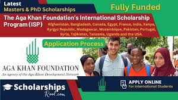
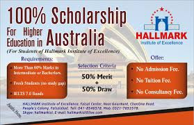

There are plenty of scholarship opportunities available for international students from Pakistan.
Here are the best fully funded scholarships for Pakistani students:
Program name:Fulbright schoolarship
funded by:United States department of States
The Fulbright Foreign Student Program offers fully funded scholarships to Pakistani students to study in the United States. This program is funded by the United States Department of State and is administered by theInstitute of International Education (IIE).
The Fulbright scholarship grants aid to Pakistani students pursuing graduate-level studies in the US. It applies to students who take postgraduate courses, doctoral degrees or research projects in any field of study.
Program name:Chevening schoolarship
funded by: Foreign, Commonwealth and Development Office and partner organisations
Chevening scholarships are a popular grant introduced by the UK for international students who wish to pursue a one-year master’s degree in the country.
The program strives to aid Pakistani students with a deep sense of passion, vision and skills in their field of interest.
Once selected, the Chevening scholarship covers your complete tuition fees, travel and accommodation expenses. This fully funded scholarship allows you to focus on your education and employment goals without worrying about your financial expenses.
Program name:Higher Education Commission (HEC) Indigenous Scholarship
funded by: Higher Education Commission (HEC) Indigenous Scholarship
The Higher Education Commission (HEC) of Pakistan offers indigenous scholarships for Pakistani students to pursue undergraduate and postgraduate degrees at any educational institution in the country.
The fully funded scholarship covers your education costs, such as tuition fees, books, accommodation, and living expenses. It is available for a maximum duration of four years. Students selected for the scholarship program will receive a monthly allowance to support them during their studies.
Program name:Aga Khan Foundation International Scholarship Program
funded by:Aga Khan Development Network(AKDN)
The Aga Khan Foundation International Scholarship Program (AKFISP) is a remarkable, fully funded scholarship for Pakistani students. The aid provides financial assistance to low-income students from Pakistan who wish to pursue higher education in universities abroad.

Program name: Petroleum Technology Development Fund Overseas Scholarship
funded by:The Fedreal government Agency
The Petroleum Technology Development Fund (PTDF) Overseas Scholarship program is a fully funded aid for Pakistani students pursuing higher education in petroleum-related fields at leading universities. The aid offers students the opportunity to study at top universities in the UK, France, Germany, and Malaysia.
Program name:The Australia-Pakistan Alumni Scholarship
funded by: Australia Government; Pakistan Government with HEC
The Australia-Pakistan Alumni Scholarship (APSP) is a fully funded scholarship program for Pakistani students wishing to pursue higher studies in Australia. The scholarship is sponsored jointly by the Australian government and the HEC of Pakistan.
